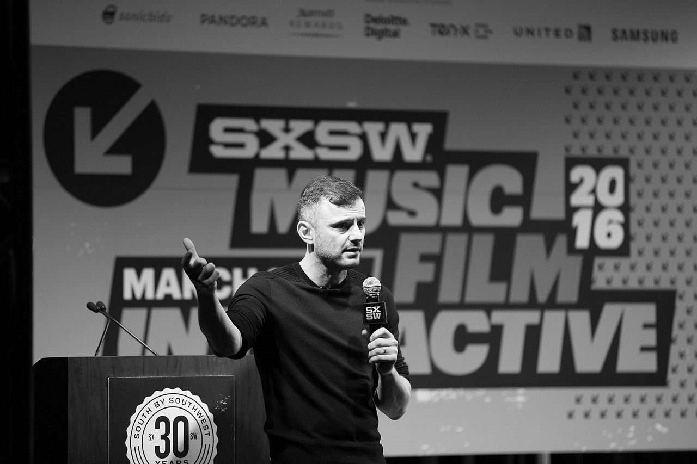
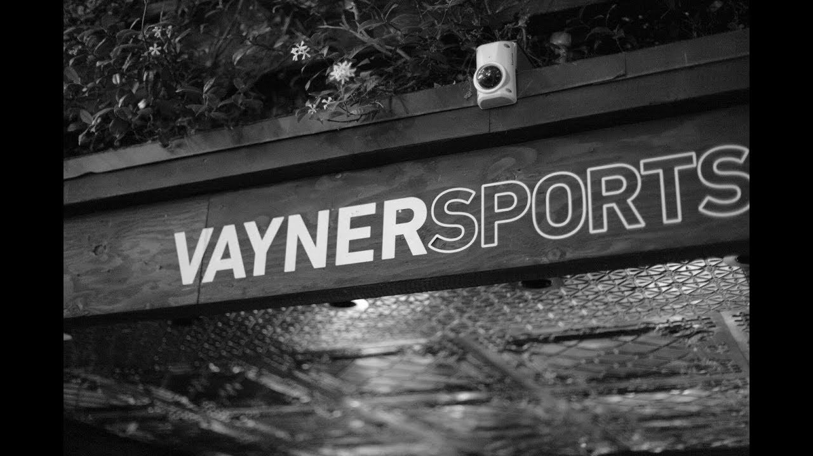

-
Gary Vaynerchuk
- Born - November 14, 1975
- Known for - Entrepreneurship, social media,
angel investing, wine education - Website - garyvaynerchuk.com
-

- 
-
Career
- 1998 - Wine Library:
- - Assumed day-to-day control of his father's wine store
- - Renamed the store to Wine Library, launched sales online and in 2006 started Wine Library TV, a daily webcast covering wine
- 2009 - VaynerMedia
- - Gary, along with his brother AJ Vaynerchuk, found VaynerMedia, a social media-focused digital agency.
-
Investments
- VaynerRSE
- - Vaynerchuk started VaynerRSE as a $25 Million investment fund with RSE Ventures' Matt Higgins and backed by Miami Dolphins owner Stephen Ross.
- BRaVe Ventures
- - In 2014, Vaynerchuk partnered with social TV entrepreneurs Jesse Redniss and David Beck to form BRaVe Ventures.[27] The firm advises television networks on emerging technology and funds and incubates emerging multi-screen and social network startups and technologies.
- VaynerSports
- - In 2016 Vaynerchuk invested in the sports agency, Symmetry, to form VaynerSports to provide full-service athlete representation.
- 
-
If you want to know more about Gary Vaynerchuck check out garyvaynerchuck.com or/and his Wikipedia page.All content and images belonging to their owners!
-

-
Gary Vaynerchuk
-
entrepreneur, author, speaker and internet personality